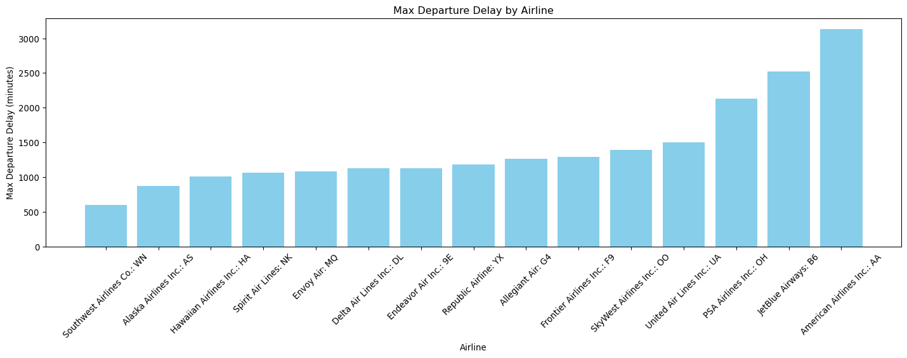
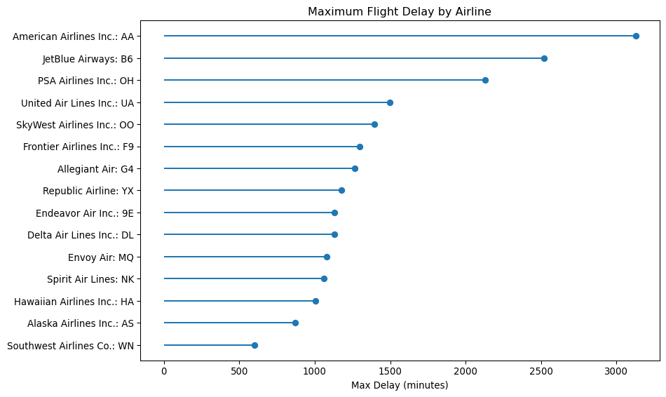
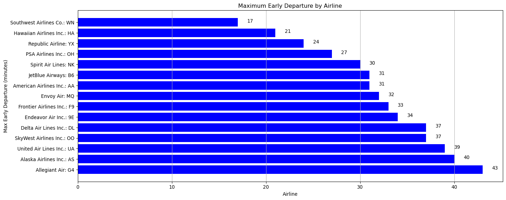
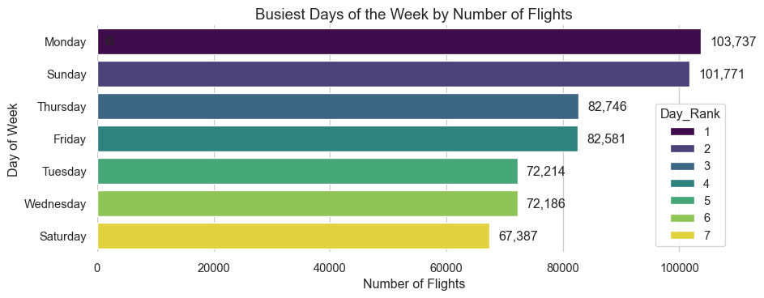
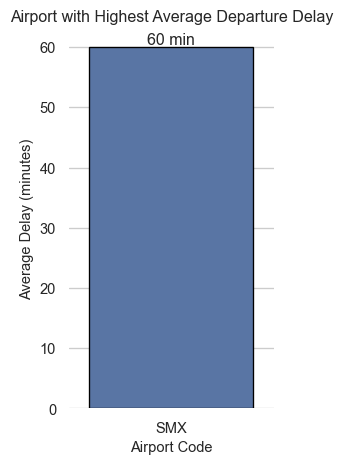
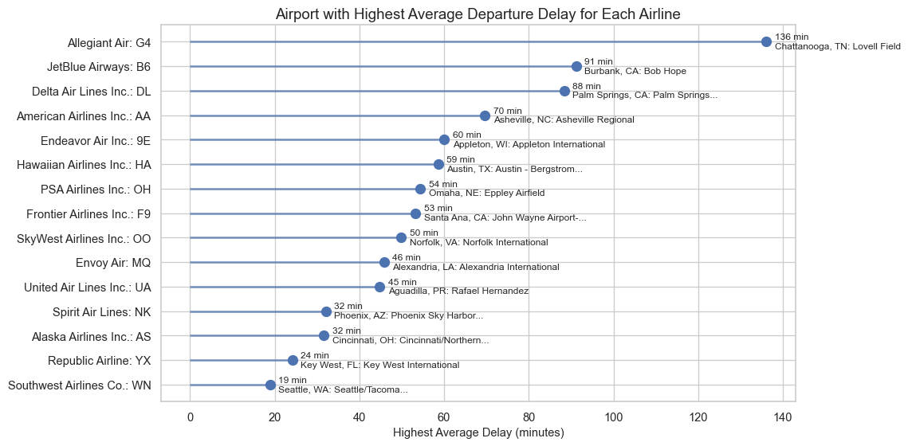
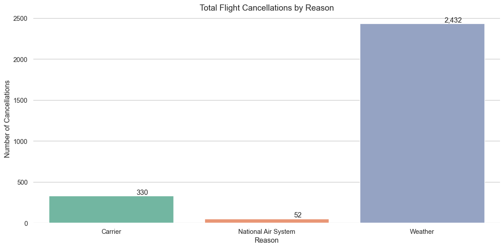
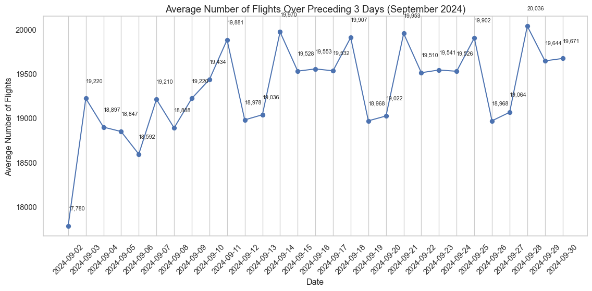
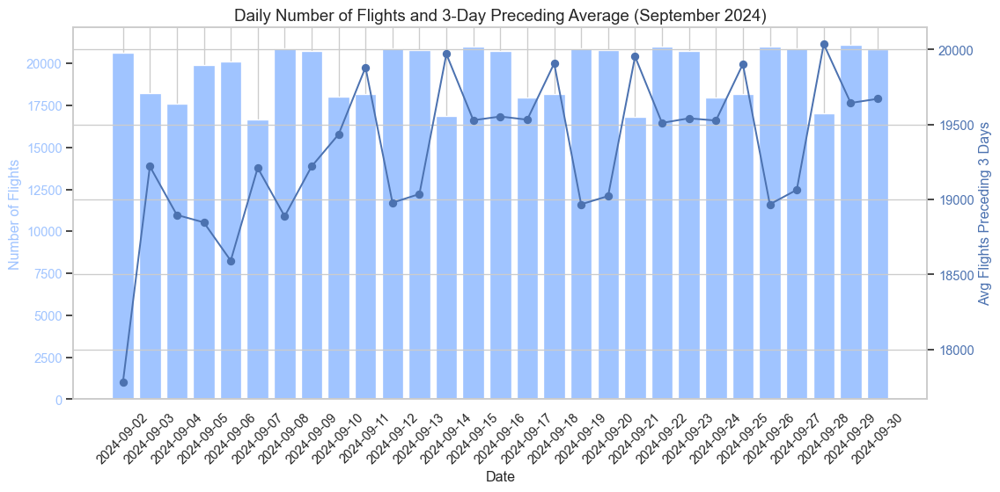

Mini Project: Analyzing Flight Delays Across Airlines
The data set is from the Airline On-Time Statistics and Delay Causes data set,published by the United States Department of Transportation at: http://www.transtats.bts.gov/. The data set was downloaded under the “Reporting Carrier On-Time Performance on September 2024”.
Load the datasets
Code
import pandas as pdimport seaborn as snsimport matplotlib.pyplot as pltimport numpy as npimport textwraptask1_df = pd.read_csv("./data/Yiting_Chin_yc1348_project_task1_results.csv")task2_df = pd.read_csv("./data/Yiting_Chin_yc1348_project_task2_results.csv")task3_df = pd.read_csv("./data/Yiting_Chin_yc1348_project_task3_results.csv")task4_df = pd.read_csv("./data/Yiting_Chin_yc1348_project_task4_results.csv")task5_df = pd.read_csv("./data/Yiting_Chin_yc1348_project_task5_results.csv")task6a_df = pd.read_csv("./data/Yiting_Chin_yc1348_project_task6a_results.csv")task6b_df = pd.read_csv("./data/Yiting_Chin_yc1348_project_task6b_results.csv")task7_df = pd.read_csv("./data/Yiting_Chin_yc1348_project_task7_results.csv")
Story: Maximum Flight Delays Across Airlines
Understanding how airlines perform in terms of extreme delays would offer customers valuable insight into potential travel disruptions, and overall travel experience. By analyzing the maximum departure delay for each carrier, we can uncover patterns that help travelers and analysts identify which airlines may pose higher disruption risks.
Task 1: Find maximal departure delay in minutes for each airline. Sort results from smallest to largest maximum delay. Output airline names and values of the delay.
Code
# Display the DataFrame for Task 1task1_df
Airline_Name
Max_Delay
0
Southwest Airlines Co.: WN
601
1
Alaska Airlines Inc.: AS
869
2
Hawaiian Airlines Inc.: HA
1005
3
Spirit Air Lines: NK
1061
4
Envoy Air: MQ
1078
5
Delta Air Lines Inc.: DL
1130
6
Endeavor Air Inc.: 9E
1132
7
Republic Airline: YX
1178
8
Allegiant Air: G4
1263
9
Frontier Airlines Inc.: F9
1296
10
SkyWest Airlines Inc.: OO
1394
11
United Air Lines Inc.: UA
1498
12
PSA Airlines Inc.: OH
2131
13
JetBlue Airways: B6
2521
14
American Airlines Inc.: AA
3130
Code
# Plot task 1 results with histogramplt.figure(figsize=(15,6))plt.bar(task1_df['Airline_Name'], task1_df['Max_Delay'], color='skyblue')plt.xlabel('Airline')plt.ylabel('Max Departure Delay (minutes)')plt.title('Max Departure Delay by Airline')plt.xticks(rotation=45)plt.tight_layout()plt.show()

The horizontal bar chart shows a clear contrast across airlines:
The distribution of maximum departure delays shows a clear separation between airlines with moderate delays and those experiencing severe disruptions. Southwest, Alaska, Hawaiian, and Spirit exhibit the lowest maximum delays in the dataset, with values ranging from approximately 600 minutes to just over 1,060 minutes (10 to 17 hours). These delays are still substantial, but they remain within a half-day window.
In contrast, American Airlines, JetBlue, and PSA Airlines show extremely high maximum delays. PSA Airlines reaches 2,131 minutes, JetBlue exceeds 2,500 minutes, and American Airlines shows the highest recorded delay at 3,130 minutes.Converting to hours, these delays range from 35 hours to over 50 hours, which is more than two full days of delay. A delay of this magnitude, indicating severe operational disruptions that would significantly impact passengers’ travel plans.
Key Insight: The difference between the lowest and highest maximum delays spans more than two days, showing that certain airlines experience rare but massive operational disruptions.
Code
plt.figure(figsize=(10,6))df_sorted = task1_df.sort_values('Max_Delay')y =range(len(df_sorted))plt.hlines(y, 0, df_sorted['Max_Delay'])plt.plot(df_sorted['Max_Delay'], y, 'o')plt.yticks(y, df_sorted['Airline_Name'])plt.xlabel('Max Delay (minutes)')plt.title('Maximum Flight Delay by Airline')plt.tight_layout()plt.show()

The lollipop chart makes the outliers even more visible. The lengths of the lines highlight: - American Airlines (AA) is a major outlier with the longest delay over 3,100 minutes. - JetBlue (B6) follows with a delay over 2,500 minutes. - PSA Airlines (OH) also shows an unusually high extreme delay.
Why this matters:
Outliers indicate airlines that had at least one severe system-wide disruption—such as weather shutdowns, staffing problems, ground halts, or logistical failures. Even if rare, these events significantly affect large numbers of passengers.
For Travelers
Extreme delays represent the worst-case scenarios for travelers. A delay of 3,000 minutes—equivalent to roughly 50 hours—is far more than a simple inconvenience. It can lead to missed connections, force passengers to secure unexpected overnight accommodations, and ultimately cause complete disruptions to their planned itineraries. Such delays not only affect the immediate flight but can cascade into significant logistical and financial burdens for travelers.
Knowing which airlines have historically seen such outliers helps travelers manage risk or choose more resilient carriers.
For Airlines & Policy Makers
Identifying which airlines experience major operational breakdowns offers a clearer view of how their systems behave under stress. With this information, airlines can make more informed decisions about staffing, making sure that crews and support teams are properly positioned during high-pressure periods. It also allows schedulers to anticipate vulnerable points in the network and adjust flight timing or aircraft assignments before problems escalate. Beyond day-to-day operations, understanding these breakdowns helps strengthen contingency plans, giving airlines a better chance of containing disruptions rather than allowing them to ripple through the system and weaken the entire network.
Story: Maximum Early Flight Depatures Across Airlines
Early departures are an important but often overlooked aspect of airline performance. Delays tends to receive more attention, consistently departing ahead of schedule early reflects an airline’s ability to manage boarding processes, coordinate turnaround operations, and maintain schedule adherence. By identifying which airlines consistently achieve early departures, stakeholders can better understand operational efficiency and customer satisfaction.
Task 2: Find maximal early departures in minutes for each airline. Sort results from largest to smallest. Output airline names.
Code
# Display the DataFrame for Task 2task2_df
Airline_Name
Max_Early_Dep
0
Allegiant Air: G4
-43
1
Alaska Airlines Inc.: AS
-40
2
United Air Lines Inc.: UA
-39
3
SkyWest Airlines Inc.: OO
-37
4
Delta Air Lines Inc.: DL
-37
5
Endeavor Air Inc.: 9E
-34
6
Frontier Airlines Inc.: F9
-33
7
Envoy Air: MQ
-32
8
American Airlines Inc.: AA
-31
9
JetBlue Airways: B6
-31
10
Spirit Air Lines: NK
-30
11
PSA Airlines Inc.: OH
-27
12
Republic Airline: YX
-24
13
Hawaiian Airlines Inc.: HA
-21
14
Southwest Airlines Co.: WN
-17
The maximum early departure times for each airline are shown as negative values, since a negative departure delay represents leaving ahead of schedule. However, negative bars can make interpretation less intuitive for general audiences. To allow for cleaner comparisons across airlines, I will convert these early departure values into positive minutes early.
This transformation does not change the meaning of the data, it simply flips the sign to make the visualization easier to interpret. I have sorted the results from largest to smallest maximum early departure times.
Code
# Plot task 2 results with histogramtask2_df['Max_Early_Dep'] = task2_df['Max_Early_Dep'].abs()plt.figure(figsize=(15,6))plt.barh(task2_df['Airline_Name'], task2_df['Max_Early_Dep'], color='blue')plt.axvline(0, color='gray', linestyle='--')plt.xlabel('Airline')plt.ylabel('Max Early Departure (minutes)')plt.title('Maximum Early Departure by Airline')plt.grid(axis='x')# add value labels on barsfor index, value inenumerate(task2_df['Max_Early_Dep']): plt.text(value +1, index, str(value))plt.tight_layout()plt.show()

Key Insight:
According to the histogram, Allegiant Air (G4) stands out with the earliest departure at 43 minutes. Follow by Alaske Airlines (AS) with 40 minutes and United Air Lines (UA) with 39 minutes. This unusual early departure of around 40 minutes suggests either exceptionally fast turnaround or specific route-level operational decisions.
Multiple airlines consistently depart more than 30 minutes ahead of schedule. Delta (DL), Endeavor (9E), JetBlue (B6), American Airlines (AA), and a couple other airlines all show early departures between 30 and 36 minutes. This pattern points toward consistent internal efficiency rather than isolated operational anomalies, indicating that these carriers may excel in coordinating boarding, ground handling, and aircraft readiness.
In contrast, the mid-size carriers and regional carriers tend to show more moderate early-departure behavior. Republic (YX), Hawaiian (HA), and PSA Airlines (OH) typically fall between 21 and 27 minutes early. Their behavior likely reflects the operational constraints of regional or mid-size service, where schedules are closely tied to mainline connections and gate assignments, leaving less room for departures that are significantly ahead of schedule.
Southwest Airlines (WN), despite being one of the largest mainline carriers in the United States, records the lowest maximum early-departure time among all airlines in the dataset. Its earliest departure is only 17 minutes ahead of schedule, noticeably lower than both mid-size mainline carriers and even some regional operators. This restrained early-departure behavior suggests a deliberate operational philosophy of Southwest, prioritizing schedule consistency and passenger predictability over aggressively pushing flights out early. Given its high passenger volumes, rapid aircraft turnover, and tightly packed gate schedules, maintaining a narrower early-departure window may also help ensure smoother boarding processes and reduce the risk of leaving passengers behind.
Why These Findings Matter
For passengers
Early departures affect punctuality just like delays:
A flight leaving 30+ minutes early can cause passengers to miss their flight if they arrive “on time.” Travelers on airlines with consistently large early departures may need to adjust airport arrival habits. Early departures influence punctuality just as significantly as delays. When a flight leaves more than 30 minutes early, even travelers who arrive at the airport on time risk missing their flight. On airlines that consistently depart well ahead of schedule, passengers may need to adjust their arrival habits simply to avoid being left behind. This adds uncertainty to the travel experience and can undermine the trustworthiness of published schedules.
For operations analysts
Early departures indicate the efficiency of day-to-day airline processes. When flights consistently push back ahead of schedule, it often signals strong gate management, rapid aircraft turnaround, and effective coordination among crews. It can also occur during periods when the airport environment is less congested, meaning when fewer aircraft are pushing back, taxiing, or taking off at the same time. In these quieter windows, ground staff, gates, and runways face lesser pressure, allowing tasks like boarding, baggage loading, fueling, and safety checks to be completed more quickly. With fewer bottlenecks on the ramp , flights can depart earlier simply because the operational environment is smoother. In some cases, airlines may also be using this operational slack strategically to maintain schedule stability and prevent delays from accumulating later in the day.
For scheduling and policy
Departing significantly ahead of the published time creates a disconnect between what the passengers expected and the airline’s actual operations. It can also unintentionally inflate an airline’s performance metrics, since leaving early reduces the likelihood of being recorded as “delayed,” even when the schedule itself isn’t being followed. This raises important fairness concerns for travelers who plan their airport arrival around the published departure time and may miss their flight despite arriving on time. Because of these issues, regulators and airport authorities should keep a close watch on early departures to ensure that schedule padding is not used inappropriately and that airlines follows the scheduled departure in a way that is transparent and fair to passengers.
Story: Ranking the Busiest Days of the Week
Understanding which days of the week have the highest flight volume provides insight into airline scheduling strategies, airport congestion patterns, and customer travel behavior. By ranking days from busiest to least busy, we could establish the operational pressure points that affect delays, staffing needs, and passenger experience.
Task 3: Rank days of the week by the number of flights performed by all airlines on that day (1 is the busiest). Output the day of the week names, number of flights and ranks in the rank increasing order.
Code
# Display the DataFrame for Task 3task3_df
Day
Num_Flights
Day_Rank
0
Monday
103737
1
1
Sunday
101771
2
2
Thursday
82746
3
3
Friday
82581
4
4
Tuesday
72214
5
5
Wednesday
72186
6
6
Saturday
67387
7
Code
# Plot task 3 results with seabornsns.set_theme(style="whitegrid")plt.figure(figsize=(10, 4))ax = sns.barplot( data=task3_df, y="Day", x="Num_Flights", hue="Day_Rank", palette="viridis", dodge=False, orient="h",)# title & labelsax.set_title("Busiest Days of the Week by Number of Flights", fontsize=14)ax.set_xlabel("Number of Flights", fontsize=12)ax.set_ylabel("Day of Week", fontsize=12)sns.despine(left=True, bottom=True)ax.ticklabel_format(style="plain", axis="x") # add value labels on barsfor p in ax.patches: width = p.get_width() ax.text( width +1500, p.get_y() + p.get_height()/2,f"{int(width):,}", va="center" )plt.tight_layout()plt.show()

Key Insight: Monday emerges as the busiest day of the week. With over 103,700 flights, Monday stands out as the peak day for air travel. This reflects heavy business-travel demand at the start of the workweek, and the repositioning of aircraft after the weekend.
Sunday is nearly as busy as Monday. Sunday’s high volume, carrying nearly 101,700 flights, highlights strong weekend travel demand as travelers return home before the upcoming workweek. This combination makes Sunday and Monday the most congested 48-hour window in the entire week.
A secondary peak appears late in the week during Thursday and Friday. Both days each exceeding 82,000 flights. This indicates that with increased corporate travel as the workweek winds down and the early movement of leisure travelers beginning their weekend trips. Together, these two days reveal the rhythm of business and leisure travel converging toward week’s end.
In contrast, mid-week days experience noticeably lower flight volumes. Tuesday with 72,214 flights and Wednesday with 72,186 show reduced activity. These are the least congested weekdays. These quieter periods often bring lower fares, fewer delays, and smoother airport operations, benefiting travelers who prefer to avoid congestion.
Saturday stands out as the least busy day of the week, with roughly 67,400 flights. This is consistent with the drop in business travel and the more dispersed timing of leisure departures. It is also a day that provides airlines with an opportunity to conduct routine maintenance or run reduced schedules, allowing them to match capacity more closely to the slower demand while preparing aircraft for the busier days ahead.
Overall, the pattern across the week reflects a predictable interplay between business schedules, leisure travel habits, and operational strategies that shape the aviation system’s weekly pulse.
Why These Findings Matter
For passengers
Understanding weekly congestion patterns helps travelers to choose flights on days that are typically less delayed, more affordable, and easier to navigate at the airport. Mid-week flights, particularly on Tuesday and Wednesday, tend to offer the most reliable travel experience and the lowest likelihood of disruption, making them ideal for travelers who prioritize punctuality.
For airlines and airports
Knowing patterns of flight volume allows airlines and airports to allocate resources more effectively. High-traffic days requires additional gate availability, more staffing, and tighter coordination across departures and arrivals to prevent crowding on taxiways and in terminals. Recognizing the peaks on Sunday–Monday and Thursday–Friday enables better resource allocation, which would help reduce bottlenecks
For performance analysis
When evaluating delay metrics or operational efficiency, it is critical to account for weekly flight volume differences as delay statistics look very different when a day handles 100,000 flights versus 70,000. Comparing delays on Monday to delays on Wednesday without considering traffic volume would produce misleading conclusions. This added pressure increases the likelihood of delays simply because there are more aircraft competing for the same resources. By including flight volume in the analysis, we get a more accurate picture of how efficiently the system is operating relative to its workload. This context also helps identify whether delays stem from operational issues or from unavoidable congestion tied to the weekly traffic cycle.
Story: Airport With the Highest Average Departure Delay
The analysis of average departure delays across airports reveals crucial insights into operational efficiency and passenger experience at different locations. By identifying the airport with the highest average departure delay, we can better understand where systemic issues may be occurring and how they impact travelers.
Task 4: Find the airport that has the highest average departure delay among all airports. Consider 0 minutes delayfor flights that departed early. Output one line of results: the airport name, code, and average delay.
Code
# Display the DataFrame for Task 4task4_df
Airport_Name
Airport_Code
Average_delay
0
Santa Maria, CA: Santa Maria Public/Capt. G. A...
SMX
60
Code
# Plot task 4 results with bar chartplt.figure(figsize=(3, 5))ax = sns.barplot( data=task4_df, x="Airport_Code", y="Average_delay", color="#4c72b0", edgecolor="black",)ax.set_title("Airport with Highest Average Departure Delay", fontsize=12)ax.set_xlabel("Airport Code", fontsize=11)ax.set_ylabel("Average Delay (minutes)", fontsize=11)# Add value label at end of barfor p in ax.patches: height = p.get_height() ax.text( p.get_x() + p.get_width() /2, height +0.5,f"{height:.0f} min", ha="center" )sns.despine(left=True, bottom=True)plt.tight_layout()plt.show()

Key Insight: Santa Maria Public/Capt. G. Allan Hancock Field (SMX) records the highest average departure delay at 60 minutes from the plotted graph. despite being a smaller regional airport with lower traffic volume compared to major hubs. This suggests that its delays are not driven by congestion but instead reflect local operational constraints. Smaller airports often face constraints such as limited gate space, fewer available staff, or shortages in key equipment. All of which can slow down routine processes like boarding, baggage handling, or aircraft turnaround. SMX may also be more sensitive to weather conditions due to its location at the Central California region. Any disruption, from fog, winds, or visibility issues, can have a larger impact because there are fewer alternative resources on standby. Additionally, performance at smaller airports can fluctuate more widely, as even a delayed routes can significantly raise the average delay. In contrast, major hubs distribute delays across thousands of daily flights, which keeps their averages more stable and less likely to be influenced by isolated issues.
Why This Finding Matters
For Airport Operations and Management
A persistently high average delay serves as a red flag and a warning signal that deeper structural or logistical issues may be affecting SMX’s performance. When delays happens this frequently, they point to underlying inefficiencies such as how flights are handled on the ground, how schedules are managed, or how resources are allocated. These issues would ultimately diminish the passenger satisfaction. Addressing these problems can improve day-to-day performance and create a more stable and predictable schedule for both airlines and passengers.
For Airlines Serving SMX
Airlines may need to re-evaluate on how they manage their operations at this smaller airport. This could involve turnaround procedures, ground handling processes or adjusting scheduled block times so that flight plans can maximize on-time departures. Airlines might also consider collaborating more closely with airport management to improve staffing adequacy at SMX. Because small airports are more sensitive to operational issues, even modest improvements can lead to noticeable gains in overall punctuality.
For Passengers
Passengers flying through SMX should be prepared for a higher risk of late departures. Awareness of this pattern helps passengers to plan more effectively, whether being more flexible with their itineraries or allowing extra time for connections. A little foresight can help reduce the stress associated with an airport known for slower departures.
For Policy and Infrastructure Planning
Identifying SMX as an airport with unusually high average delays helps highlight where targeted investments could have a meaningful effect. Small upgrades like expanding gate access, improving ground-service capacity, or adjusting scheduling practices may significantly reduce delays.
Story: Airline-Specific Airports with the Highest Average Departure Delay
For each airline, identifying the airport where it experiences the highest average departure delay reveals problems at the airport level that aren’t visible in broader airline-wide statistics. Instead of looking at overall airline performance, this analysis pinpoints where each airline struggles the most in its network.
Task 5: For each airline find an airport where it has the highest average departure delay. Output an airline name, a name of the airport that has the highest average delay, and the value of that average delay.
Code
# Display the dataframe for Task 5task5_df
Airline_Name
Airport_name
Highest_Average_Delay
0
Alaska Airlines Inc.: AS
Cincinnati, OH: Cincinnati/Northern Kentucky I...
31.633333
1
Allegiant Air: G4
Chattanooga, TN: Lovell Field
136.111111
2
American Airlines Inc.: AA
Asheville, NC: Asheville Regional
69.635135
3
Delta Air Lines Inc.: DL
Palm Springs, CA: Palm Springs International
88.333333
4
Endeavor Air Inc.: 9E
Appleton, WI: Appleton International
60.000000
5
Envoy Air: MQ
Alexandria, LA: Alexandria International
45.777778
6
Frontier Airlines Inc.: F9
Santa Ana, CA: John Wayne Airport-Orange County
53.304348
7
Hawaiian Airlines Inc.: HA
Austin, TX: Austin - Bergstrom International
58.615385
8
JetBlue Airways: B6
Burbank, CA: Bob Hope
91.200000
9
PSA Airlines Inc.: OH
Omaha, NE: Eppley Airfield
54.346154
10
Republic Airline: YX
Key West, FL: Key West International
24.192982
11
SkyWest Airlines Inc.: OO
Norfolk, VA: Norfolk International
49.913043
12
Southwest Airlines Co.: WN
Seattle, WA: Seattle/Tacoma International
18.929329
13
Spirit Air Lines: NK
Phoenix, AZ: Phoenix Sky Harbor International
32.065789
14
United Air Lines Inc.: UA
Aguadilla, PR: Rafael Hernandez
44.766667
Code
# Plot task 5 results with dot plotsns.set_theme(style="whitegrid")# Sort by delay df = task5_df.sort_values("Highest_Average_Delay", ascending=True).reset_index(drop=True)plt.figure(figsize=(12, 6))# Plot the vertical line for each airlineplt.hlines(y=df.index, xmin=0, xmax=df["Highest_Average_Delay"], color="#4c72b0", alpha=0.7, linewidth=2)# Plot the dotsplt.scatter(df["Highest_Average_Delay"], df.index, color="#4c72b0", s=80)plt.yticks(df.index, df["Airline_Name"])# Labelsplt.xlabel("Highest Average Delay (minutes)", fontsize=11)plt.title("Airport with Highest Average Departure Delay for Each Airline", fontsize=14)# Add text labels showing airport and minutesfor i, (delay, airport) inenumerate(zip(df["Highest_Average_Delay"], df["Airport_name"])): airport_short = textwrap.shorten(airport, width=40, placeholder="...") plt.text(delay +2, i,f"{delay:.0f} min\n{airport_short}", va="center", fontsize=9)plt.tight_layout()plt.show()

Key Insight: Allegiant Air has the most severe delay hotspot, as flights operating through Chattanooga, TN (CHA) produces an average delay of 136 minutes, the highest worst airport delay among all airlines. This suggest Allegiant Air encounters ongoing challenges at this airport—possibly due to limited staffing, runway constraints, or local weather conditions that disrupt operations more than elsewhere.
JetBlue and Delta also face major delay challenges. JetBlue’s operations at Burbank, CA (BUR) show an average delay of 91 minutes, while Delta’s flights at Palm Springs, CA (PSP) face delays averaging 88 minutes. These cases shows that even large, well-equipped airlines can struggle at airports with limited resource. Both Burbank and Palm Springs are relatively small size in terms of airport, the airport layout itself can slow down operations, examples like runways may be shorter, taxi routes can be narrow or indirect, and there may be little room for aircraft to wait when schedules slip. These physical limitations reduce the airport’s ability to absorb unexpected delays, so even a small disruption can escalate quickly.
Most airlines experience moderate airport delays, typically ranging from about 45 to 70 minutes. Carriers such as American, Endeavor, Hawaiian, PSA, Frontier, and Envoy fall into this category. These delays suggest issues that are noticeable but still manageable. In many cases, the delays may stem from airports where operations run reasonably well but still face occasional slowdowns. These slowdowns could caused by brief hold-ups during aircraft turnaround or uneven staffing levels at certain times of the day. These issues don’t usually cause major system-wide disruptions, but they do create pockets of inefficiency that can be improved with focused attention. When airlines and airport teams tighten coordination in these areas, it often results in fewer cascading schedule problems.
In contrast, a few airlines operate with small delay hotspots, which indicates their networks are mostly steady and dependable. Republic Airline’s most delayed airport is Key West (EYW), averaging 24 minutes of delay, and Southwest’s most challenging location, Seattle–Tacoma (SEA), shows an average of just 19 minutes. These low values suggest that both carriers have systems that manage disruptions well, allowing them to maintain a lower average delay even when local conditions are less than ideal.
Why These Findings Matter
For Airlines
For airlines, the results show that performance can vary significantly from one airport to another. Identifying the specific airports where each airline struggles the most helps resolve local issues such as crowding during busy seasons, limited gate space, or scheduling practices that do not match the airport’s operational pace. Instead of spreading efforts across their entire network, airlines can focus on the locations that cause the biggest delays and make improvements where they will matter most.
For Airports and Regulators
Airports and regulators can also use these insights to prioritize upgrades that would have the greatest effect. At certain locations such as Chattanooga, Burbank, and Palm Springs, on-time performance appears harder to maintain. When an airport creates unusually large delays for even one airline, it suggests that its physical layout, operating procedures, or resource availability might be placing limits on how smoothly flights can move through the system. By making small infrastructure upgrades, these airports could reduce delays not only for a single carrier but for all airlines that depend on them. Since delays at one airport often spread through the broader network, fixing problems at these specific locations can help stabilize performance on a wider scale.
For Passengers
Knowing which airports tend to cause long delays for their chosen airline helps set realistic expectations. Travelers can avoid tight layovers at these locations, allow extra time during busy travel seasons, or simply be prepared for possible disruptions. This is particularly useful for passengers flying with airlines like Allegiant or JetBlue, whose delay at certain airports exceed 90 minutes on average. Delays of that length can easily cause missed connections or force major changes to travel plans, so a little awareness can go a long way in reducing stress.
Story: Flight Cancelation Reasons for Each Departure Airport
Understanding the reasons behind flight cancellations at different departure airports can provide insights for evaluating the reliability of both airlines and airports, as cancellations disrupt schedules far more severely than delays. By identifying the most frequent cancellation reasons for each airport, stakeholders can address specific issues that lead to disruptions.
Task 6: Check if your dataset has any canceled flights. If it does, what was the most frequent reason for each departure airport? Output airport name, the most frequent reason, and the number of cancelations for that reason.
First, for Task 6a, we identify if the dataset has any canceled flights.
Code
# Display the dataframe for Task 6task6a_df
Num_Canceled_flights
0
3499
From the results above, we can see that there are 3499 canceled flights in the dataset. This confirms that cancellation analysis is meaningful and that operational disruptions are non-trivial in this dataset. Next, for Task 6b, we find the most frequent reason for cancellations at each departure airport.
Code
# Display the dataframe for Task 6task6b_df
Airport_Name
Reason
Num_Cancelations
0
Aguadilla, PR: Rafael Hernandez
Carrier
1
1
Akron, OH: Akron-Canton Regional
Weather
1
2
Albany, GA: Southwest Georgia Regional
Weather
1
3
Albany, NY: Albany International
Carrier
2
4
Albuquerque, NM: Albuquerque International Sun...
Carrier
3
...
...
...
...
185
West Palm Beach/Palm Beach, FL: Palm Beach Int...
Weather
2
186
West Yellowstone, MT: Yellowstone
Weather
1
187
White Plains, NY: Westchester County
Weather
5
188
Wilmington, NC: Wilmington International
Weather
7
189
Wrangell, AK: Wrangell Airport
Carrier
1
190 rows × 3 columns
Since there are multiple cancellation reasons across 190 airports, I summarize the results with two visualizations to highlight key patterns. ## Overall cancellations by reason
Code
# total cancellations per reasonreason_totals = ( task6b_df .groupby("Reason", as_index=False)["Num_Cancelations"] .sum())plt.figure(figsize=(12, 6))ax = sns.barplot( data=reason_totals, x="Reason", y="Num_Cancelations", hue="Reason", palette="Set2")# title & labelsax.set_title("Total Flight Cancellations by Reason", fontsize=14)ax.set_xlabel("Reason", fontsize=12)ax.set_ylabel("Number of Cancellations", fontsize=12)sns.despine(left=True, bottom=True)# show the count of cancellations by reasonfor p in ax.patches: height = p.get_height() ax.text( p.get_x() +0.2+ p.get_width() /2, height +1,f"{int(height):,}", ha="center", va ="bottom" )plt.tight_layout()plt.show()

Key Insight: The bar chart above summarizes cancellations into three primary federally defined categories present in the dataset: Carrier, Weather, and National Air System (NAS). From the plot, 2432 of total flight cancellation reasons are weather-related, accounting for the highest total number of cancellations across all airports. This is expected because weather events, such as thunderstorms, snow, fog, and high winds could affect multiple flights simultaneously. Unlike airline or crew issues, weather cannot be mitigated through staffing or scheduling changes. Weather disruptions often impact entire regions and those delays tend to spread through the network and create bigger slowdowns.
330 cancellations were caused by carrier-related issues such as aircraft mechanical problems, crew shortages, or internal scheduling breakdowns, which account for the second largest cancellations overall.
The National Air System (NAS) category only accounts for 52 cancellations. NAS cancellations, which include air traffic control delays, airspace restrictions, routing issues, or system capacity limits, represent the second-largest group. These cancellations point to traffic congestion across the system rather than problems caused by a specific airport or airline. Airports in congested airspace or those dependent on major traffic corridors may experience more NAS-related cancellations.
Top 10 most cancellation-prone airports
Code
# total cancellations per airporttop10 = ( task6b_df .sort_values("Num_Cancelations", ascending=False) .head(10))# plot top 10 cancellation-prone airportsplt.figure(figsize=(10, 5))ax = sns.barplot( data=top10, x="Num_Cancelations", y="Airport_Name", hue="Reason", dodge=False, palette="Set2", orient="h")ax.set_title("Top 10 Airports by Number of Flight Cancellations", fontsize=13)ax.set_xlabel("Number of Cancellations", fontsize=11)ax.set_ylabel("Departure Airport", fontsize=11)sns.despine(left=True, bottom=True)# add value labels on barsfor p in ax.patches: width = p.get_width()if width >0: ax.text( width +5, p.get_y() + p.get_height() /2,str(int(width)), va="center" )plt.tight_layout()plt.show()
Key Insight: Charlotte Douglas International Airport (CLT) appears as the airport with the highest number of cancellations in the dataset, reaching 356 in total. Every cancellation at CLT is linked to weather, showing how strongly the airport is affected by the thunderstorms and seasonal storm systems common to the Southeast regions. Because CLT is one of the major transfer-heavy hubs, disruptions here can spread quickly through the national network, making it one of the most impactful locations for weather related cancellations.
Tampa (TPA) and Atlanta (ATL) also show a high number of weather-based cancellations, with Tampa reporting about 260 and Atlanta 185. Both regions regularly deal with intense storms and tropical weather patterns, which interfere with flight operations throughout the year. Atlanta’s position as one of the busiest airports in the world due to its geography and serving as “Super Hub” for Delta Air Lines. Atlanta is a 2-hour flight from 80% of the U.S. population. This makes it the mathematically perfect transfer point for connecting the East Coast, Midwest, and South. Also, Atlanta unlike other cities like New York or Chicago which split traffic between multiple airports (JFK/LaGuardia or O’Hare/Midway), Atlanta funnels almost all traffic into a single airport.
Across the dataset, most of the airports with the highest cancellation numbers share a similar profile. Charlotte Douglas International Airport (CLT), Tampa, Atlanta, Asheville, New Orleans, Washington Reagan, Dallas/Fort Worth, Miami, and Fort Myers all report weather as the leading cause. This shows a clear trend that weather is the dominant driver of cancellations, especially at large hubs and airports located in regions with volatile seasonal conditions.
Newark Liberty International Airport (EWR) stands out as the only airport in the top ten where cancellations are driven primarily by National Airspace System (NAS) constraints rather than weather. Newark operates in one of the most crowded air corridors in the country, with high traffic, limited runway flexibility, and frequent air traffic control restrictions. These conditions make Newark particularly sensitive to system-level bottlenecks, meaning that many of its cancellations are caused by the airspace environment rather than local weather or carrier issues.
Why These Findings Matter
For Airlines
Knowing which airports have the highest cancellation rates helps airlines make better operational decisions. When carriers see that certain airports regularly struggle during storms or heavy traffic, they can adjust their schedules to allow more breathing room, position aircraft nearby, or plan maintenance and staffing more carefully. Even though airlines cannot control the weather or national airspace restrictions, improving the parts they can control reduces the number of cancellations that stem from avoidable internal issues.
For Airports
Airports that often rank high in cancellations can use these insights to improve their resilience. When weather is a major factor, the airport might need better deicing equipment or strengthening runway operations during low-visibility periods can make a difference. In busier regions, airports may need to work more closely with air-traffic control or adjust how planes use gates during rush hours. These targeted improvements not only protect the airport’s own schedule but also help prevent ripple effects across the national network.
For Passengers
Knowing the main reasons behind cancellations helps travelers plan ahead of time. For people traveling through airports with many cancellations like Charlotte, Tampa, Atlanta, or Newark, it helps to plan ahead. Booking longer layovers, choosing flexible travel times, or avoiding tight connections can reduce stress when flying through these locations. Knowing that some airports have more weather issues or heavier traffic helps passengers set realistic expectations, especially during storm season or holiday travel. A little extra planning can make trips much smoother.
Story: Average Number of Flights Over Preceding 3 Days
Air travel activity fluctuates every day, but the raw number of flights often hides the structural patterns that matter most for airlines, airports, and passengers. By examining September 2024 flight volumes and computing the 3-day average of preceding flights, we uncover a narrative about scheduling behavior, weekday–weekend dynamics, and overall operational stability across the air transportation network.
Task 7: Build a report that for each day output average number of flights over the preceding 3 days.
Code
# Display the dataframe for Task 7task7_df = task7_df.dropna(subset=['Avg_Flights_Preceding_3_Days'])task7_df
Flight_Date
Day_of_Week
Num_Flights
Avg_Flights_Preceding_3_Days
1
2024-09-02
Monday
20661
17780.0000
2
2024-09-03
Tuesday
18250
19220.5000
3
2024-09-04
Wednesday
17631
18897.0000
4
2024-09-05
Thursday
19895
18847.3333
5
2024-09-06
Friday
20106
18592.0000
6
2024-09-07
Saturday
16663
19210.6667
7
2024-09-08
Sunday
20892
18888.0000
8
2024-09-09
Monday
20747
19220.3333
9
2024-09-10
Tuesday
18005
19434.0000
10
2024-09-11
Wednesday
18184
19881.3333
11
2024-09-12
Thursday
20920
18978.6667
12
2024-09-13
Friday
20807
19036.3333
13
2024-09-14
Saturday
16859
19970.3333
14
2024-09-15
Sunday
20994
19528.6667
15
2024-09-16
Monday
20744
19553.3333
16
2024-09-17
Tuesday
17985
19532.3333
17
2024-09-18
Wednesday
18175
19907.6667
18
2024-09-19
Thursday
20908
18968.0000
19
2024-09-20
Friday
20778
19022.6667
20
2024-09-21
Saturday
16846
19953.6667
21
2024-09-22
Sunday
21000
19510.6667
22
2024-09-23
Monday
20734
19541.3333
23
2024-09-24
Tuesday
17974
19526.6667
24
2024-09-25
Wednesday
18196
19902.6667
25
2024-09-26
Thursday
21023
18968.0000
26
2024-09-27
Friday
20890
19064.3333
27
2024-09-28
Saturday
17019
20036.3333
28
2024-09-29
Sunday
21105
19644.0000
29
2024-09-30
Monday
20851
19671.3333
Code
# Plot task 7 results with line plotplt.figure(figsize=(12, 6))plt.plot( task7_df['Flight_Date'], task7_df['Avg_Flights_Preceding_3_Days'], marker='o', color='#4c72b0')# title & labelsplt.title('Average Number of Flights Over Preceding 3 Days (September 2024)', fontsize=14)plt.xlabel('Date', fontsize=12)plt.ylabel('Average Number of Flights', fontsize=12)plt.xticks(rotation=45)plt.grid(axis='y')# add value labels on pointsfor i, value inenumerate(task7_df['Avg_Flights_Preceding_3_Days']): plt.text(i, value +200, f"{int(value):,}", va='center', fontsize=8)plt.tight_layout()plt.show()

Key Insight: From the above line plot, which shows the 3-day preceding average. Early in the month, the moving average is lower because the plot start with September 2, thus fewer than three preceding days exist. After the first few days, the moving average stabilizes into a broad but consistent band between 18,800 and 20,000 flights, reflecting steady operational activity across most of September. Even though individual days experience dips, particularly on Saturdays, the effect on the moving average is slight and temporary, indicating a resilient and balanced system. The line shows oscillations that mirror the weekly rhythm from September 10 to September 28. The average dips slightly following low-traffic Saturdays and rises again after the high volumes that typically occur on Sundays and Mondays. The highest point in the trend line reaches just above 20,000 flights on September 27 (Friday), indicating a period of particularly strong three-day demand. These patterns confirm that overall flight activity in September 2024 was consistent and highly regular, with no evidence of major disruptions such as severe weather events or operational breakdowns.
Code
# Plot task 7 results with bar plot and overlaid line plotfig, ax1 = plt.subplots(figsize=(12, 6)) ax2 = ax1.twinx()ax1.bar( task7_df['Flight_Date'], task7_df['Num_Flights'], color='#a0c4ff', label='Number of Flights')ax2.plot( task7_df['Flight_Date'], task7_df['Avg_Flights_Preceding_3_Days'], marker='o', color='#4c72b0', label='Avg Flights Preceding 3 Days') # title & labelsax1.set_title('Daily Number of Flights and 3-Day Preceding Average (September 2024)', fontsize=14)ax1.set_xlabel('Date', fontsize=12)ax1.set_ylabel('Number of Flights', fontsize=12, color='#a0c4ff')ax2.set_ylabel('Avg Flights Preceding 3 Days', fontsize=12, color='#4c72b0')ax1.tick_params(axis='y', labelcolor='#a0c4ff')ax2.tick_params(axis='y', labelcolor='#4c72b0')ax1.set_xticklabels(task7_df['Flight_Date'], rotation=45)ax1.grid(axis='y') plt.tight_layout()plt.show()
/var/folders/ds/60p0sjyd6xj_gxb1bv0wknv00000gn/T/ipykernel_42948/3875979242.py:24: UserWarning:
set_ticklabels() should only be used with a fixed number of ticks, i.e. after set_ticks() or using a FixedLocator.

Key Insight:
The bar plot which overlays daily flight counts with a 3-day preceding moving average, reveals a strong and recurring weekly rhythm in flight activity throughout September 2024. The height of the bars shows that Sundays and Mondays consistently record the highest numbers of flights, while Tuesdays, Wednesdays, and Thursdays generally dip to the lower end of the 18,800–19,600 range. These reductions correspond to the quieter mid-week travel period when both leisure and business travel typically soften. The average then rises again toward the weekend before dropping sharply for Saturdays, which experience drops in volume. This weekly structure appears throughout the month, indicating a highly regular pattern in air-travel demand. The moving-average line provides a useful comparison by filtering out day-to-day noise.
Together, the two visualizations tell a clear story that individual days may rise and fall in flight volume, but the underlying demand for air travel during this period is steady and cyclical.
Why These Findings Matter
For Airlines
Recognizing that mid-week flights are consistently lower helps airlines plan their operations more smoothly. With fewer passengers and fewer flights on these days, carriers have more flexibility to organize staff schedules and handle routine maintenance without putting extra pressure on the system. Conversely, the regular spikes on Sundays and Mondays signal times where additional staff, gate availability, and turnaround resources are needed to prevent delays and congestion. These insights also influence pricing strategies, where airlines often adjust ticket prices dynamically based on expected load factors, meaning passengers traveling on mid-week days may find lower fares, while tickets for Sundays and Mondays are often more expensive since demand is higher.
For Passengers
From the passenger perspective, knowing when flight volumes rise or fall can make travel planning much easier to avoid crowded airports, minimize the risk of delays, or secure lower price tickets. In contrast, knowing when airports are busier helps people plan ahead, arrive early, or avoid tight connections. Ultimately, these trends reflect the broader rhythm of travel behavior, and making them visible through data empowers both airlines and travelers to make smarter decisions.